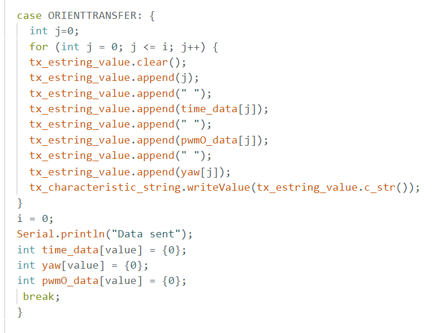
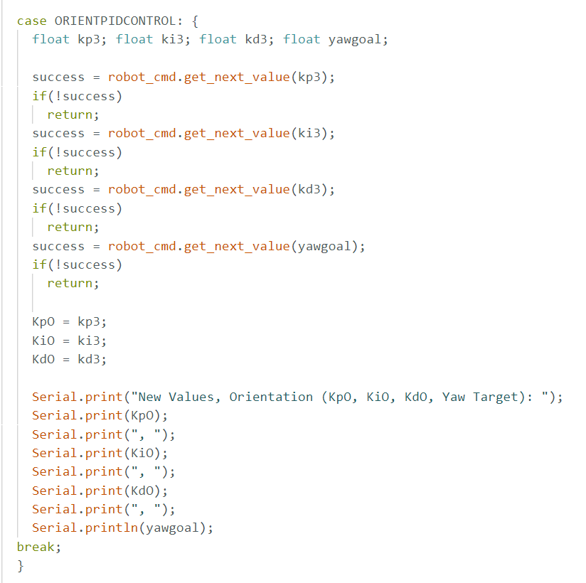
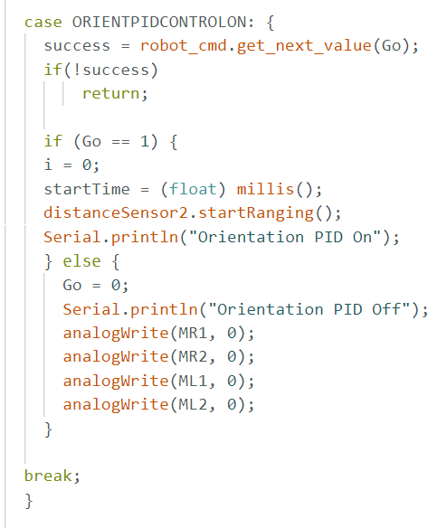
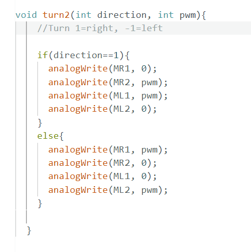
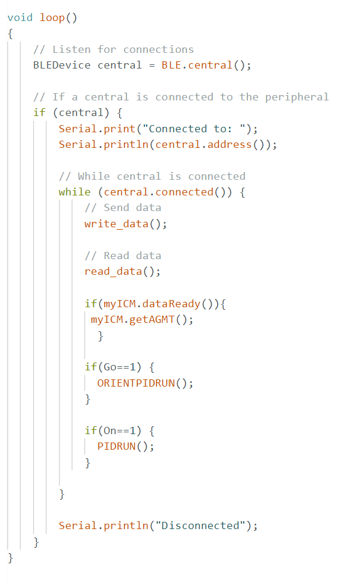
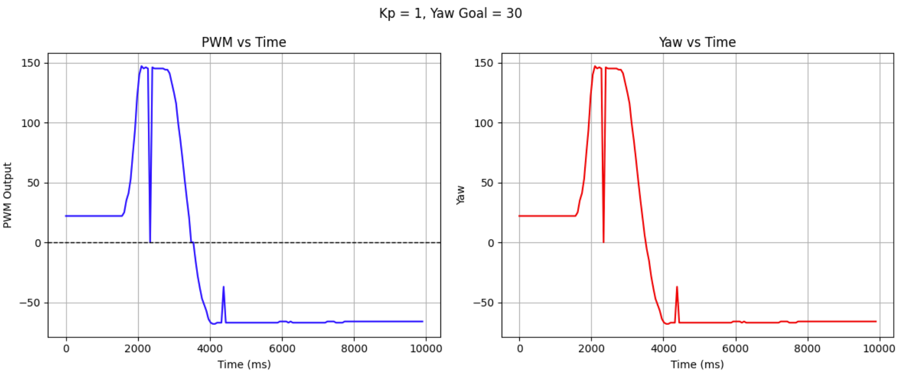
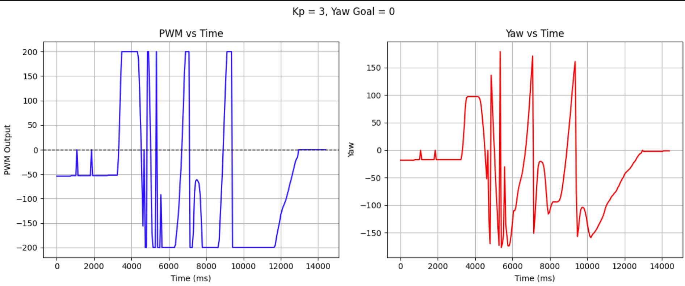

Orientation PID Control
Objective
The goal of this lab was to gain hands-on experience with orientation PID control using the IMU. While Lab 5 focused on PID control for wall distance with TOF sensors, this lab focused on controlling the robot’s yaw based on IMU data.
Prelab
Settig up the DMP:

Digital integration of gyro data can lead to drift over time, as small errors and noise accumulate, causing the estimated orientation to slowly become inaccurate as seen in prior labs. To reduce yaw drift, I used the onboard digital motion processor (DMP) in the IMU, which fuses gyro and accelerometer data internally and provides orientation estimates with much lower drift. Using the DMP significantly helped maintain a stable yaw reading. I turned on the DMP in the setup code, ran the examples, and then integrated the example code with my ble code to get a yaw reading that I then used in my control loop.
Handling Data:
I created arrays to store the data points. I created a command to pull the data to python once I turned off the PID loop. I sent data point #, milliseconds, PWM, and Yaw reading to python to aid in debugging and allow me to graph my data.
Setting up PID:
I created a few different sections of code to allow PID to run smoothly on my car.
1-Like Lab 5, I added a command that allows you to change your PID values on the spot. While testing PID, it was very annoying to have to wait a few minutes for the code to compile each time I wanted to change PID values. This made testing a lot easier.
2- Add a command to start and stop Orientation PID from python.
3- Inside the void loop (), place code that checks to see if PID is turned on. If so, run the PID loop.
4- The Orient PID loop calculates current Yaw values using the DMP, updates arrays, and calls the command to calculate a new PWM. The current Yaw is determined, send to PID calculations, then a PWM is returned. From this PWM, the correct move (either left or right, and how fast) command is called. I tested my motors to see which combination of on made them turn each way, as is seen below.
5- The PID Calculations function is where I send the current yaw and target distance to get back a PWM from the Orientation PID loop.
6. On the python side, I call ble.send_command(CMD.ORIENTPIDCONTROL, ".15|.4|1") to set my values, ble.send_command(CMD.ORIENTPIDCONTROLON, "1") to start PID, and ble.send_command(CMD.ORIENTPIDCONTROLON, "0") to turn off PID. I use a notification handler to process my array and call ble.send_command(CMD.ORIENTTRANSFER, "") to get my data.
Lab Tasks
The P controller:
My P loop:
I started off by writing a P controller. I then tested a range of values for Kp. If Kp was too large, the car would overshoot and keep spinning. If Kp was too small, I found the car would get stuck and not be able to get to the target yaw as the PWMs from the P loop would be too small for the car to move. I set my min PWM to 50 and the max to 150 like in lab 5, as I found that letting the car go up to 250 caused it to respond more unpredictably. Limiting the max PWM to 150 saw little decrease in the time needed to get to the Yaw goal and many times more predictability, so this parameter was worthwhile in improving overall performance. I found my optimal Kp value to be 2. Here, the car wouldn't massivley overshoot and keep turning and wouldn't get stuck with too little PWM input. Too much Kp (=3) caused the car to bounce back and forth around the target distance.
Graphs, Kp= 1 vs Kp=2 vs Kp = 3:
Here, the Kp is too low as the car settles at a spot where it's wheels don't have enough PWM to cause it to turn to the target yaw.
This shows the car's oscillations around the target yaw as it overshoots and compensates.

This shows the car's oscillating a bit but then arriving at its target.
Video of Kp too low, Kp= 1.5:
Video showing Kp is too high, Kp = .3:
Video showing good Kp, Kp= 2
PI, PID?:
I was able to get my P loop working reliably. I wrote a PI and PID loop, and after much testing I have decided I need some more office hours to help debug my PI loop. Currently, the PWM is always maxed out and I suspect there is an error with my integrator error, causing the PWMs to always be maxed. My car keeps crashing into the wall when I run the code and infinite print statements have not come to the rescue. I would like to get PI & PID working ASAP so I can have more reliable positional controls on my car.
Example of PI stuck at 150 PWM:

Discussion:
For me, the theme of the lab was debugging. I'd run basic example code to test my TOF and motor drivers when things started to go haywire to see if there was a hardware or software issue. A fresh battery also solves a lot of issues. Finally, print statements are your best friend to see where a loop is getting stuck. I'm a lot more confident with how all the sections of the .ble operate together as well now after setting up the code for this lab in so many areas of the master file.